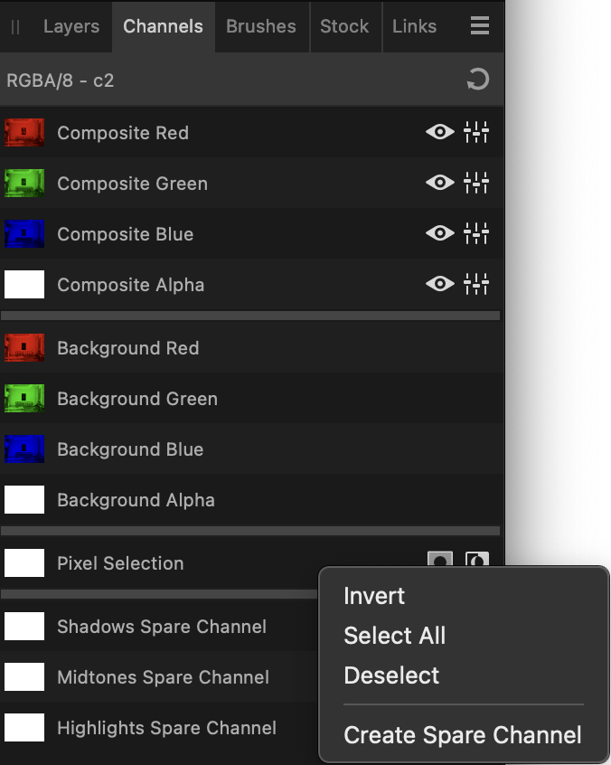

Saving selections as alpha channels
Any number of selections can be stored as spare alpha channels in the Channels panel for future use. From there you can reinstate any selection on demand. To learn more visit Pixel selections from channels.

Saving selections to file
Instead of using the Channels panel, selections can be saved to a standalone file. Saved selections can then be loaded from the file into the same or another project.